Ориентирование в мире
Спорт, который придумали офицеры
Бег по незнакомому лесу с картой и компасом родился в Скандинавии на рубеже XIX и XX веков: из армейских упражнений в чтении карты выросли гражданские соревнования, а затем массовый спорт со своими картами, компасами и правилами. Международная федерация ориентирования (IOF) основана в 1961 году, чемпионаты мира разыгрываются с 1966-го, и сегодня в неё входят 80 национальных федераций. Чемпионы мира есть не только у Швеции, Норвегии и Финляндии, но и у Швейцарии, Франции, Дании, России, Великобритании, Чехословакии и Чехии, Венгрии, Украины, Австрии, Латвии и Австралии, а соревнования давно вышли из леса в парки и исторические центры городов, на лыжню и велосипедные тропы.
Статья — краткий обзор этого пути для всего мира. Европейской истории подробно посвящена статья об ориентировании в Европе, советской и российской — статья об ориентировании в России и СССР, а все чемпионаты мира и Европы с протоколами и картами собраны в каталоге чемпионатов IOF. Опорой служат историческая справка IOF, статьи Википедии об истории ориентирования, о чемпионатах мира и о национальных федерациях, обзор истории норм для спортивных карт Д. Петровича и, конечно, календарь O-Maps, где есть все чемпионаты мира IOF в беге, на лыжах и велосипедах. Все упомянутые люди собраны в указателе имён в конце статьи.
- Первый гражданский старт
- 31 октября 1897, Нурмарка под Кристианией (Осло), клуб IK Tjalve
- Международная федерация
- IOF — с 21 мая 1961 (Копенгаген, 10 стран-основательниц), признана МОК в 1977; основная страница IOF указывает 80 федераций (шесть с приостановленными правами), а IOF Eventor — 81 запись: 64 полных, 9 предварительных и 8 приостановленных членств (основной список IOF).
- Чемпионаты мира
- в беге — с 1966, на лыжах — с 1975, на велосипедах — с 2002, в трейл-ориентировании — с 2004
- Рекордсмены
- по 23 золота чемпионатов мира у Туве Александерссон и Симоне Нигли-Лудер, 14 у Тьерри Жоржу
- Главные районы
- Скандинавия и Финляндия, Центральная Европа и Альпы; вне Европы — Австралия, США, Япония, Израиль, Казахстан
- Архив O-Maps
- 92 чемпионата мира IOF в календаре (42 в беге, 27 на лыжах, 23 на велосипедах) в 28 странах-хозяйках (на 14 ноября 2026 года; все числа O-Maps — на эту дату)
Места на карте
Где проходили соревнования, о которых рассказывает статья. Точка стоит там же, где событие на карте календаря O-Maps — в его координатах или в центре его карты, поэтому у многодневных стартов точек несколько. Цвет точки показывает, когда место впервые появляется в статье, число в кружке — сколько рядом точек. Значок 📍 в тексте ведёт к месту на этой карте.
Все места списком
1886–1918: офицеры, клуб Tjalve и первая карта

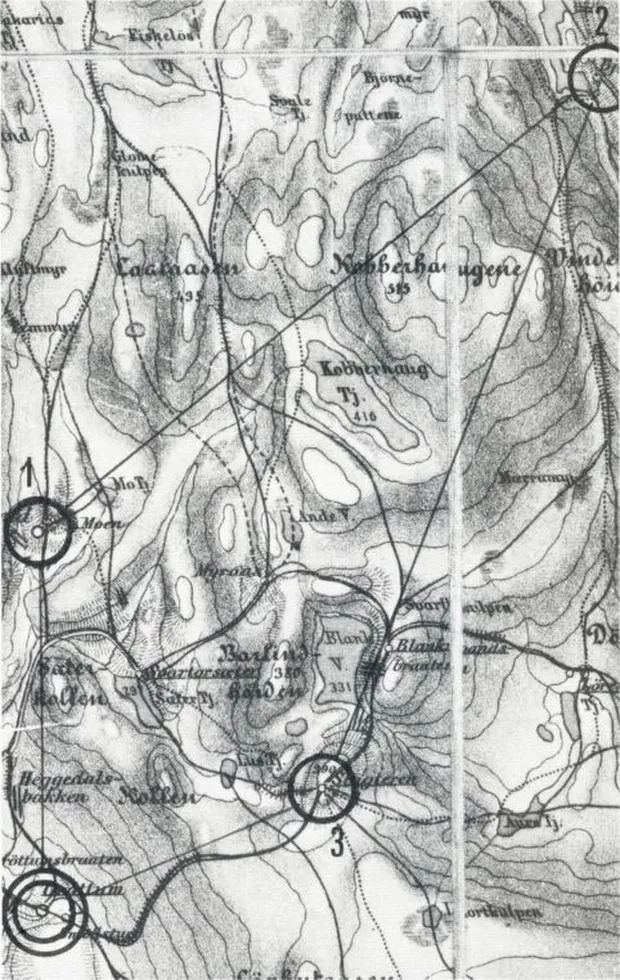
Слово orientering в значении «пересечение незнакомой местности с помощью карты и компаса» впервые употребили в 1886 году в шведской Военной академии Карлберг (Википедия). Первые состязания тоже были военными, но о дате источники расходятся: по шведской Википедии, со ссылкой на Шведский союз ориентирования, офицеры впервые соревновались 28 мая 1893 года на ежегодных спортивных играх Стокгольмского гарнизона, а справка IOF называет 1895 год и соревнования гарнизонов Стокгольма и Осло.
Днём рождения спорта IOF считает первый открытый для всех старт: 31 октября 1897 года спортивный клуб IK Tjalve провёл соревнование в лесном массиве Нурмарка к северу от столицы Норвегии, тогда входившей в унию со Швецией. Дистанция по нынешним меркам была огромной — 19,5 км всего с тремя контрольными пунктами, а победил Педер Фоссум с результатом 1 ч 47 мин 07 с (Википедия). «Спортивной карты» ещё не существовало: участники бежали по обычной топографической карте. В Швеции первое гражданское соревнование 17 марта 1901 года провёл клуб Sundbybergs IK, и контрольные пункты там стояли у старинных церквей Спонга и Бромма (исторические вехи Шведской федерации ориентирования). Почти тогда же появилось и ориентирование на лыжах: IOF ведёт его историю с 1890-х годов.
До Первой мировой войны такие старты оставались редкостью и чаще всего были частью военной подготовки. Как спорт ориентирование стало складываться в Северных странах в начале XX века, и, по справке IOF, к 1930 году прочно обосновалось в Финляндии, Норвегии и Швеции. Подробнее о скандинавских и других европейских истоках рассказывает статья об ориентировании в Европе.
1919–1945: Килландер, компас Silva и массовый спорт
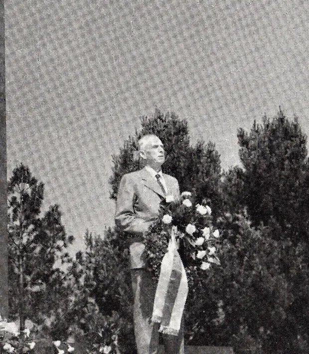

Массовым видом спорта ориентирование сделал стокгольмский офицер Эрнст Килландер. Председатель Стокгольмского спортивного союза (1917–1935) и деятель скаутского движения, он стремился сделать спорт массовым, а не элитным, и видел в ориентировании способ увлечь молодёжь лёгкой атлетикой. Соревнование, задуманное им в 1918 году, прошло в 1919-м в Накке под Стокгольмом: 12 км, 220 участников (шведская Википедия, английская Википедия). Килландер продолжал разрабатывать правила, в 1929 году выпустил брошюру «Несколько слов об ориентировочном беге», а с основания Шведского союза ориентирования был постоянным членом его правления. В Скандинавии его называют «отцом ориентирования».
Важнейшим техническим шагом стал новый компас. В 1928 году шведский ориентировщик Гуннар Тилландер придумал компас, позволявший быстро снимать азимут прямо с карты, и вместе с братьями Бьёрном, Альвином и Альваром Чельстрём, торговавшими простыми компасами, доработал его; в 1932 году они основали компанию Silva, а в 1933-м выпустили компас на прозрачной пластине-линейке, который оставался главным инструментом ориентировщика до появления «пальцевого» компаса (Википедия). Бьёрн Чельстрём сам был сильным ориентировщиком и лыжником: в мае 1928 года, в 17 лет, он финишировал последним в группе новичков, а осенью того же года уже выиграл окружное первенство. Компасов Silva с тех пор продано больше 25 миллионов.

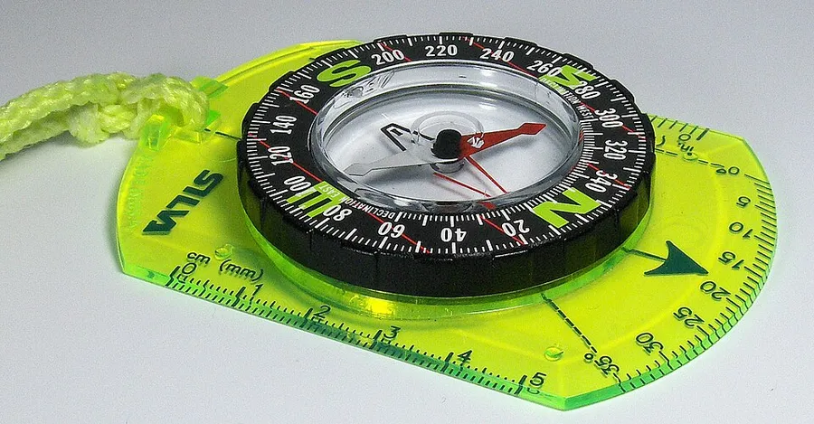
Надёжный и недорогой компас подстегнул рост. Первый международный старт — встреча команд Норвегии и Швеции — прошёл в 1932 году под Осло (IOF), а к 1934 году ориентированием, по данным, которые приводит Википедия, занимались больше 250 тысяч шведов; вид спорта проник в Финляндию, Швейцарию, Венгрию и СССР. Отечественные историки, впрочем, выводят советское ориентирование не из скандинавского опыта, а из туризма и военно-прикладных гонок (подробнее — в статье о России и СССР).
В Швеции женщинам разрешили соревноваться в 1925 году, первый в Финляндии старт провёл в 1923 году клуб IFK Helsingfors в Гранкулле (Кауниайнен), первый чемпионат Швеции прошёл 27 сентября 1935 года в Шиннскаттеберге, первый чемпионат Норвегии — в 1937-м (шведская и норвежская Википедия). Дата основания Шведского союза ориентирования — первой национальной федерации — в источниках расходится: в английской Википедии — 1936 год, в шведской — 6 января 1938 года. Даже война не остановила северные старты: в 1945 году в Швеции впервые пробежали ночную эстафету Tiomila.
1946–1965: от северного содружества к Международной федерации
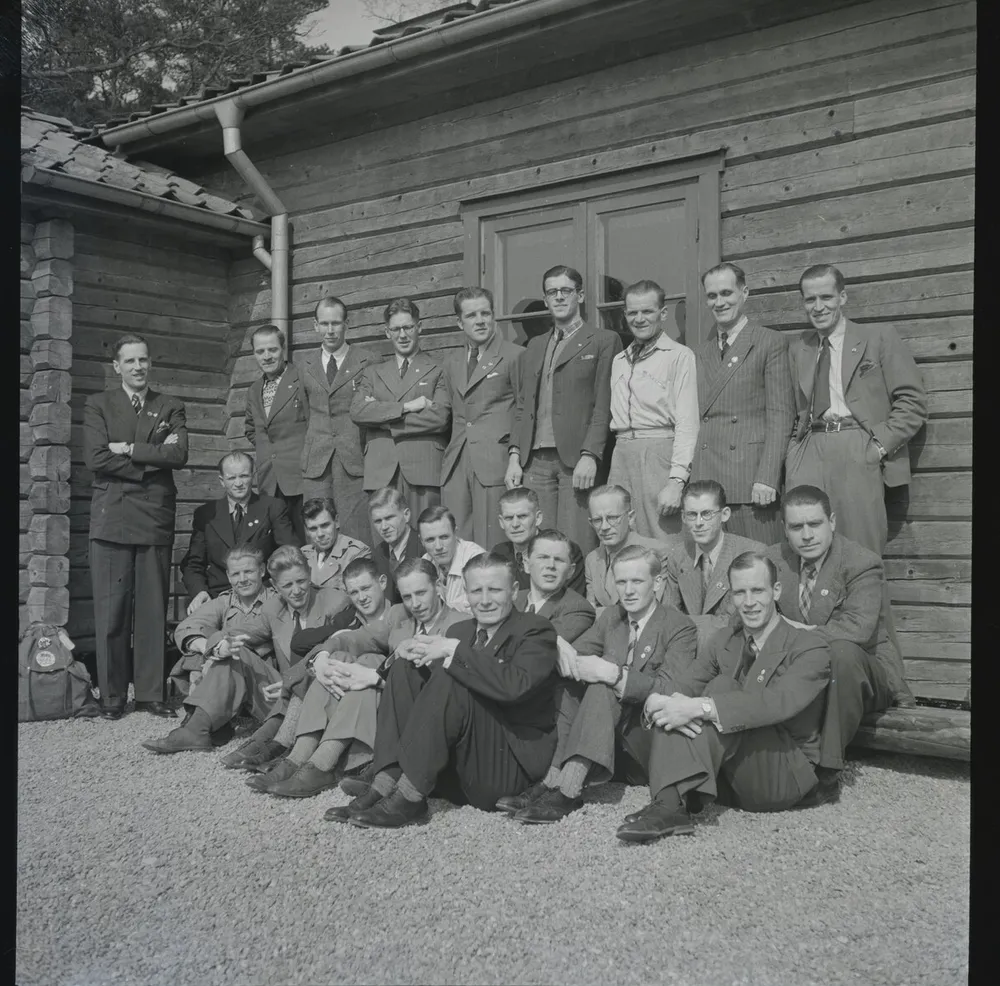
Сразу после войны северные соседи оформили сотрудничество: в 1945 году появились национальные федерации Финляндии (24 марта) и Норвегии (1 октября), в 1946-м — северный координационный орган NORD (IOF), а в 1949 году в Финляндии впервые прошла эстафета Jukola. Международные встречи, начатые Норвегией и Швецией, продолжились втроём с Финляндией, позже к ним присоединилась Дания.
Вид спорта начал уходить и за пределы Скандинавии: европейцы, переезжая после войны, привозили его с собой, армии брали его на вооружение как упражнение в навигации. Бьёрн Чельстрём в 1946 году переехал в США, основал американское отделение Silva, а в 1955-м издал книгу Be Expert with Map and Compass, которая разошлась тиражом больше 500 тысяч экземпляров и переиздаётся до сих пор. В 1949 году прошла первая международная конференция о правилах и картах, а в 1959-м Швеция собрала делегатов 12 стран: Австрии, Болгарии, Чехословакии, ГДР, ФРГ, Венгрии, Швейцарии, Югославии и четырёх северных стран.
Конгресс 21–22 мая 1961 года в Копенгагене основал Международную федерацию ориентирования. Её учредили федерации десяти стран — Болгарии, Венгрии, ГДР, Дании, Норвегии, Финляндии, ФРГ, Чехословакии, Швейцарии и Швеции; официальным языком стал немецкий, президентом избрали шведского землемера Эрика Тобе, руководившего федерацией до 1975 года, генеральным секретарём — Ингу Лёвдин (IOF, 2011). Первыми официальными стартами IOF стали чемпионат Европы 1962 года📍 в норвежском Лётене и чемпионат 1964-го📍 в швейцарском Ле-Брассю (о них — в статье о чемпионатах Европы). К первому из них подготовили и первые официальные нормы спортивных карт, а в 1965 году в IOF появилась картографическая комиссия (Душан Петрович).
В том же 1965 году впервые прошла шведская многодневка O-Ringen (первый день из-за нехватки карт провели в датском Хиллерёде, Википедия), на которую сегодня съезжается около 15 тысяч участников (Википедия). А в Советском Союзе в эти годы своё ориентирование выросло из туристских слётов почти без связи с Европой: первый дневной старт прошёл под Ленинградом в 1959 году (подробнее).
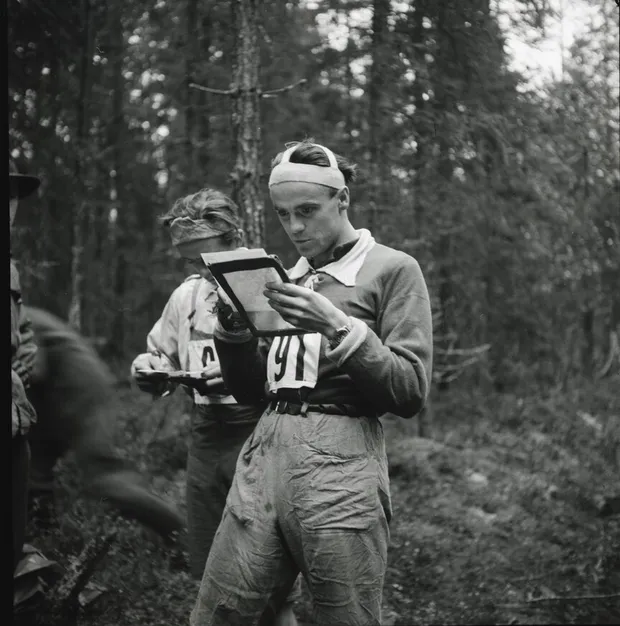

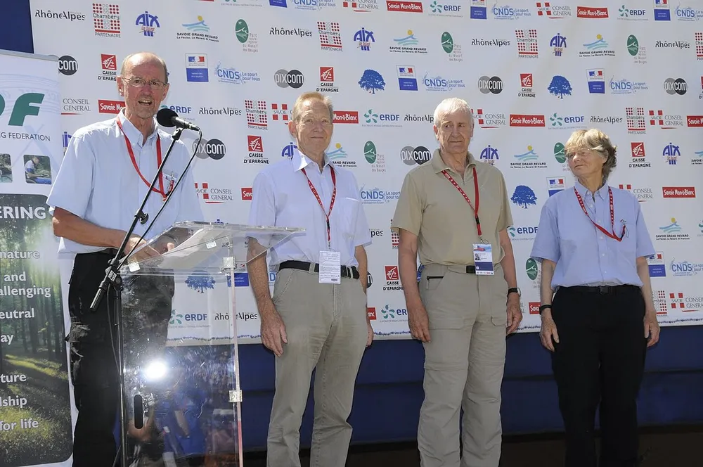
1966–1990: чемпионаты мира и скандинавская эпоха
Первый чемпионат мира📍 прошёл 1–2 октября 1966 года в финском посёлке Фискарс. Выступали 11 стран, все европейские, — Австрия, Болгария, Великобритания, Венгрия, ГДР, Дания, Норвегия, Финляндия, Чехословакия, Швейцария и Швеция; программа, как у чемпионатов Европы, состояла из индивидуальной гонки и эстафеты. Мужчины бежали 14,1 км с 11 КП, женщины — 8,1 км с 10 КП. Первыми чемпионами мира стали норвежец Оге Хадлер и шведка Улла Линдквист, обе эстафеты выиграли шведы, а на финише присутствовал президент Финляндии Урхо Кекконен (Википедия).
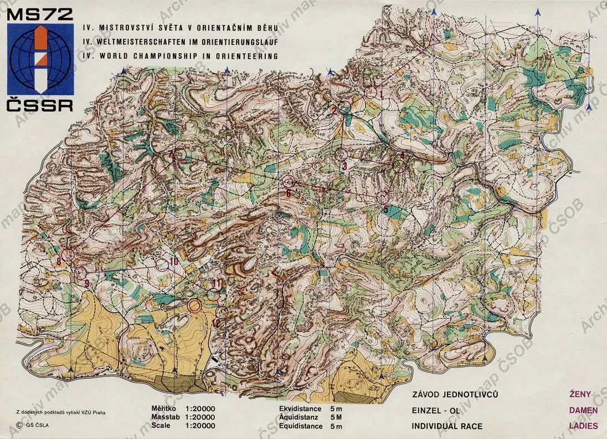
Дальше чемпионат мира проводился почти всегда раз в два года и быстро стал главным стартом сезона. В 1968 году шведское телевидение SVT показало индивидуальную гонку в Линчёпинге📍 в прямом эфире — это первая телетрансляция ориентирования не только в Швеции, но и в мире. В 1970 году в ГДР📍 впервые стартовал неевропеец — канадец Роберт Кейлл (Kaill), не добравшийся до финиша, а в 1972-м в Чехословакии📍 венгерка Шаролта Монспарт стала первой чемпионкой мира не из Северных стран (на чемпионате Европы 1964 года уже побеждала швейцарка Маргрит Томмен, Википедия). В 1969 году в IOF было уже 16 стран, включая первых неевропейских членов — Канаду (с 1968 года) и Японию (с 1969-го), а в 1977 году федерацию признал Международный олимпийский комитет (Википедия, IOF). Признание, однако, не означало места в олимпийской программе — о попытках его получить рассказано ниже.
Чемпионаты 1970–1980-х остались временем великих скандинавов. Шведка Анникен Крингстад в 1981–1985 годах выиграла шесть золотых медалей подряд — все, что разыгрывались, норвежец Эйвин Тон с 1979 по 1989 год собрал семь золотых наград. В 1975 году появился чемпионат мира на лыжах, в 1983-м — соревнования ветеранов, в 1986-м — официальный Кубок мира. В 1985 году чемпионат впервые уехал из Европы — в австралийский Бендиго📍, где индивидуальную гонку у женщин снова выиграла Крингстад. В 1986 году полноправным членом IOF стал СССР, в 1987-м во Франции📍 советская сборная впервые вышла на старт чемпионата мира, а в 1989-м в шведском Шёвде📍 латышка Алида Абола выиграла первую медаль СССР — бронзу (подробнее — в разделе о СССР и России). Все чемпионаты этих лет с результатами и картами — в статье о чемпионатах мира.

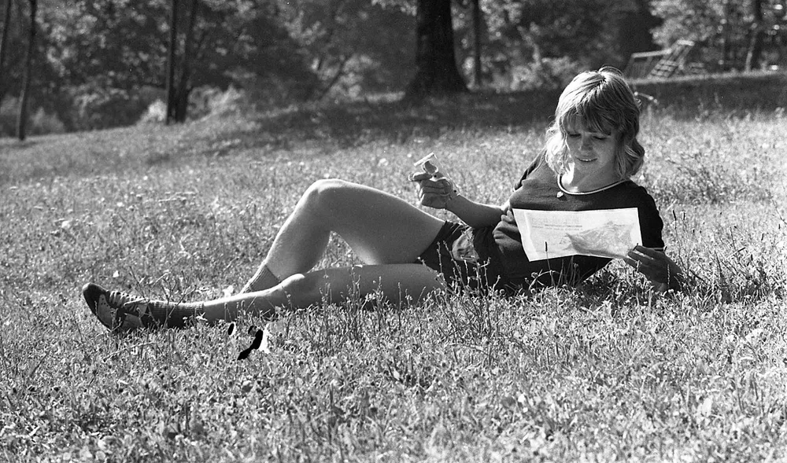

1991–2002: короткие дистанции, спринт и новые дисциплины
Девяностые начались с перемен в программе. На чемпионате 1991 года📍 в Марианске-Лазне появилась короткая дистанция на 20–25 минут, и первым чемпионом в ней стал хозяин трассы чехословак Петр Козак. Там же швейцарцы выиграли эстафету — первое золото Швейцарии, которая с тех пор стала третьей страной мира по числу титулов после Швеции и Норвегии (Википедия). В 1993 году чемпионат впервые прошёл в Северной Америке📍 — в Уэст-Пойнте (штат Нью-Йорк), а на чемпионате 1995 года в германском Детмольде📍 отмечались уже электронной системой (подробнее).

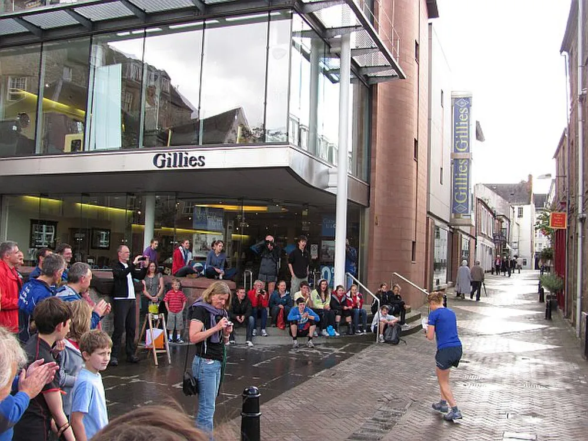
Главным сюжетом десятилетия стало стремление сделать ориентирование зрелищным. С 1996 года в парках и на улицах городов проводилась коммерческая серия Park World Tour, в 1995 году IOF вступила в Международную ассоциацию Всемирных игр, а в 2001-м ориентирование впервые вошло в программу Всемирных игр. На чемпионате мира 2001 года в Тампере📍 появился спринт — 12–15 минут бега по городу и парку. Там же швейцарка Симоне Лудер (позже Нигли-Лудер) выиграла своё первое золото — на классической дистанции, и там же, по сообщению IOF, каждый шаг бегунов в лесу впервые отслеживали по GPS. Спринт быстро превратился в отдельную ветвь со своими картами, обувью и тактикой.
Расширился и круг дисциплин. В 1992 году IOF признала трейл-ориентирование, доступное людям с ограниченной подвижностью, в 2002-м во французском Фонтенбло📍 прошёл первый чемпионат мира по велоориентированию, а юниоры с 1990 года разыгрывают собственный чемпионат мира. Чемпионаты Европы, прерванные после 1964 года, вернулись в 2000-м (подробнее).
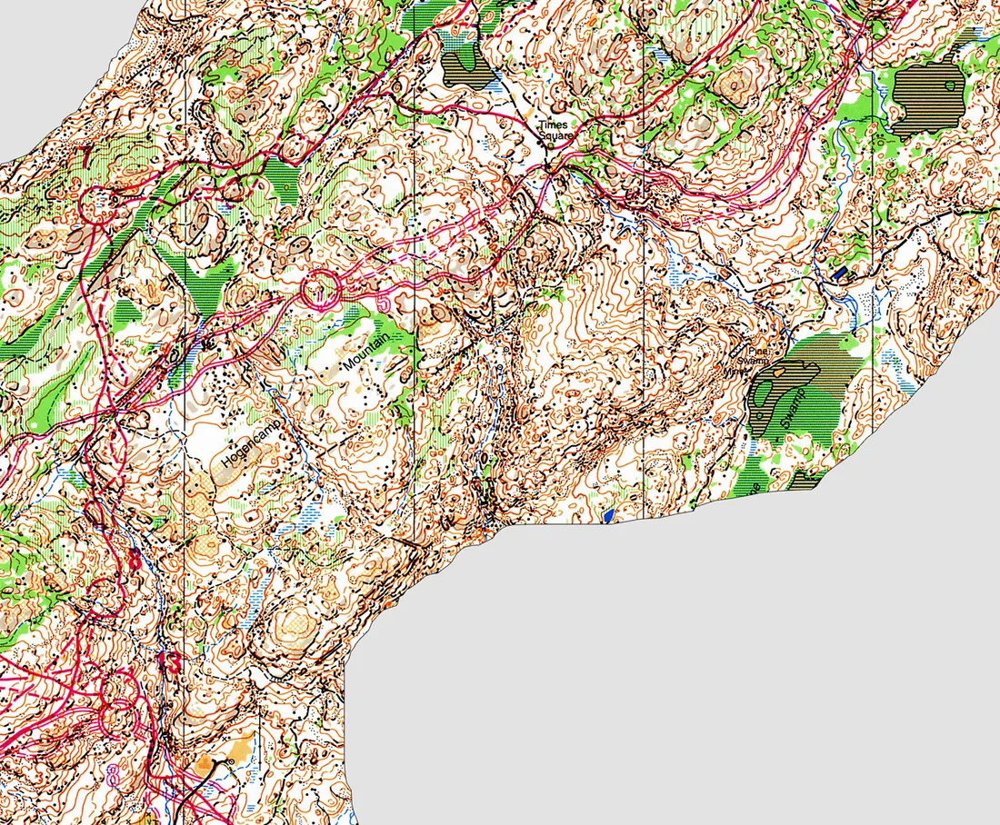
Место того чемпионата источники называют по-разному: в списках чемпионатов Википедии и IOF — Уэст-Пойнт, в статье об истории ориентирования — соседний парк Харриман. Чемпионами 1993 года в классике стали датчанин Аллан Могенсен и шведка Марита Скугум, а в 1995 году короткую дистанцию в Детмольде выиграл украинец Юрий Омельченко — в мировой элите появлялись новые страны.
2003–2018: ежегодные чемпионаты, эпоха Нигли и Жоржу
С 2003 года чемпионат мира стал ежегодным: короткую дистанцию сменил миддл на 30–35 минут, а эстафета сократилась с четырёх этапов до трёх (Википедия). Разыгрывались восемь комплектов медалей — в спринте, миддле, на длинной дистанции и в эстафете у мужчин и женщин, — и лицо этих лет определили двое. Швейцарка Симоне Нигли-Лудер на первом чемпионате мира в Азии — в японском Аити в 2005 году📍 — выиграла спринт, миддл, длинную дистанцию и эстафету, а всего с 2001 по 2013 год собрала 23 золотые медали. Француз Тьерри Жоржу превратил миддл в свою дисциплину: восемь титулов на этой дистанции и шесть в других видах; до 2026 года Франция не выигрывала ни одного золота чемпионатов мира без его участия.
Главной соперницей Нигли была финка Минна Кауппи (девять золотых медалей в 2006–2012 годах), а швейцарец Даниэль Хубманн за 2005–2025 годы собрал 30 медалей — больше всех среди мужчин, из них девять золотых. В 2006 году в Орхусе📍 австралийка Ханни Олстон выиграла спринт и стала первой чемпионкой мира не из Европы — и первой, кто в один год выиграл и взрослый, и юниорский чемпионат мира. Годом раньше, в 2005-м, в Японии длинную дистанцию выиграл Андрей Храмов, открыв золотое десятилетие сборной России.
Чемпионаты этих лет запомнились не только рекордами. В 2009 году в венгерском Мишкольце📍 на эстафете тяжело травмировался лидировавший швед, и шедшие рядом соперники, среди них Жоржу, остановились, чтобы ему помочь (подробнее). В 2011 году на чемпионат во Франции заявились больше 50 стран (IOF), а в 2014-м в Италии📍 дебютировала смешанная спринт-эстафета (женщина — мужчина — мужчина — женщина), первыми чемпионами в ней стали швейцарцы.
Олимпийская программа так и оставалась недостижимой. 31 августа 2010 года IOF подала заявку на включение лыжного ориентирования в зимние Игры 2018 года, но в октябре исполком МОК решил не добавлять новых видов. Летом 2015 года федерация вместе с Японской ассоциацией ориентирования предложила для Игр в Токио миддл у мужчин и женщин и смешанную спринт-эстафету, но из 26 заявок в короткий список попали восемь видов, и ориентирования среди них не оказалось.
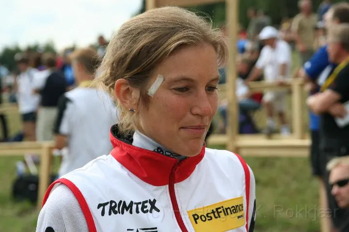

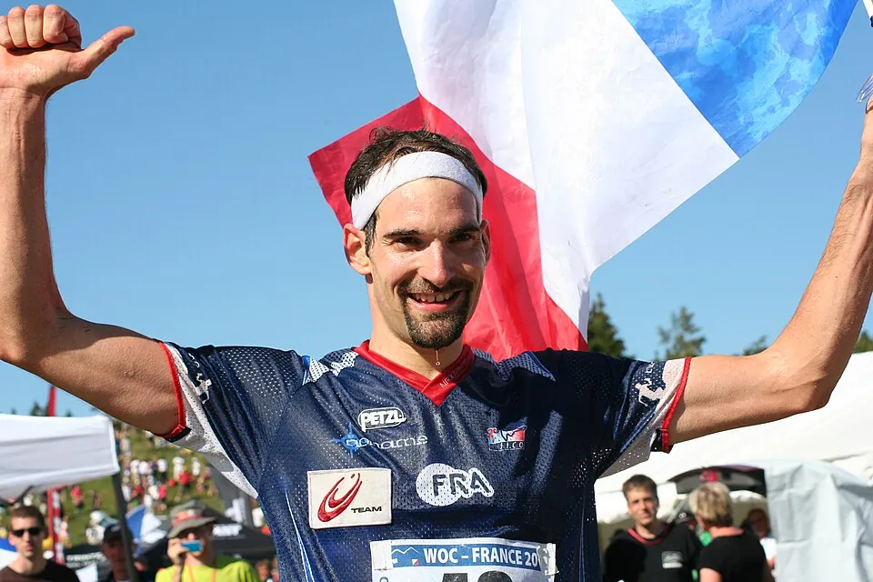

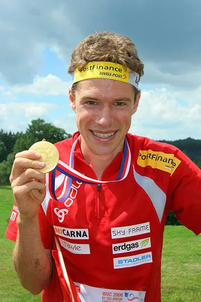

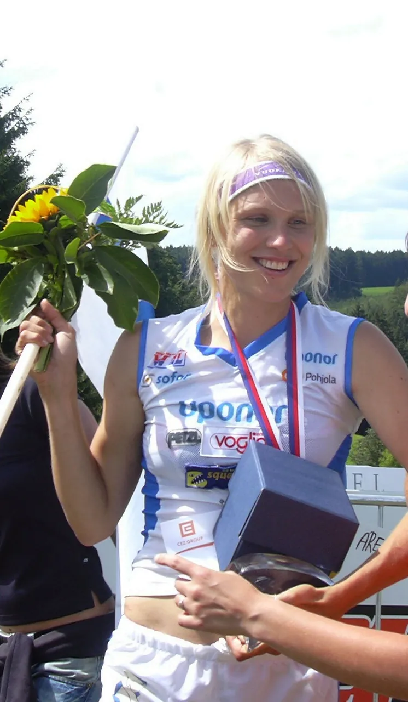

2019–2026: лесные и спринтерские чемпионаты, пандемия и отстранение
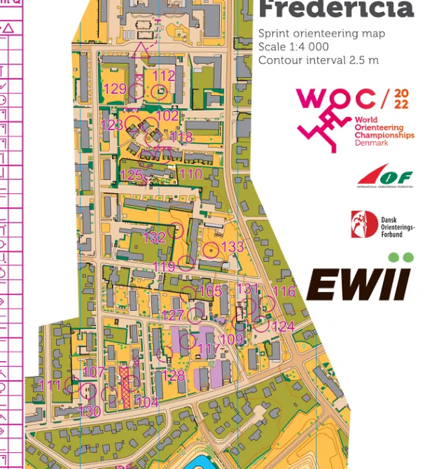
С 2019 года чемпионат мира разделили на два: в нечётные годы — лесной (длинная дистанция, миддл, эстафета), в чётные — спринтерский. Чемпионат 2019 года в Норвегии📍 впервые с 2001 года прошёл без спринта, а первый спринтерский чемпионат 2020 года в Дании отменили из-за пандемии COVID-19, как и чемпионат мира по велоориентированию, юниорский и ветеранский чемпионаты мира. Чтобы спринтеры не остались без титулов на четыре года, в чешский Докси в 2021 году📍 добавили спринт и спринт-эстафету, и шведка Туве Александерссон выиграла все пять гонок — рекорд одного чемпионата; всего с 2018 по 2022 год она одержала 11 побед подряд.
Первый чисто спринтерский чемпионат прошёл в Дании в 2022 году📍, и в нём дебютировал нокаут-спринт: квалификация, четвертьфиналы, полуфиналы и финал за один день, по 5–8 минут бега в каждом раунде. У мужчин эстафету поколений приняли норвежцы Улав Лунданес (десять золотых медалей в 2010–2019 годах, шесть из них на длинной дистанции) и Каспер Харлем Фоссер, швейцарец Маттиас Кибурц (восемь золотых), а в 2023 году в Швейцарии📍 40-летний Даниэль Хубманн выиграл эстафету и стал самым возрастным чемпионом мира. В 2025 году в Куопио📍 Александерссон догнала Нигли-Лудер — у каждой по 23 золота, а спринтерский чемпионат 2026 года прошёл в Генуе📍.
Политика тоже вошла в историю этих лет. В 2021 году, после решения Спортивного арбитражного суда по делу о российском антидопинговом агентстве, россияне выступали на чемпионатах мира в нейтральном статусе. 28 февраля 2022 года, после начала военных действий на Украине, совет IOF приостановил членство Федерации спортивного ориентирования России: российских спортсменов не допускают на старты IOF даже как нейтральных, права на проведение соревнований в России отозваны, российские члены комиссий IOF отстранены. 4 марта та же мера коснулась Белоруссии, а в марте 2026 года совет большинством голосов оставил ограничения без изменений. Часть спортсменов сменила сборную. Так, Наталья Гемперле с 2023 года бежит за Швейцарию, Андрей Ламов - за Швецию.
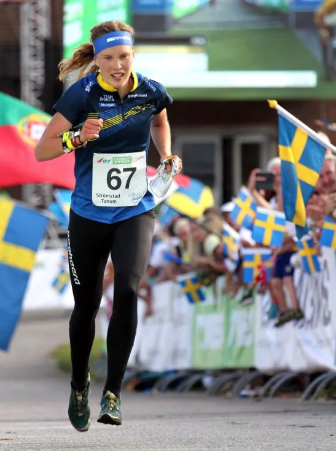

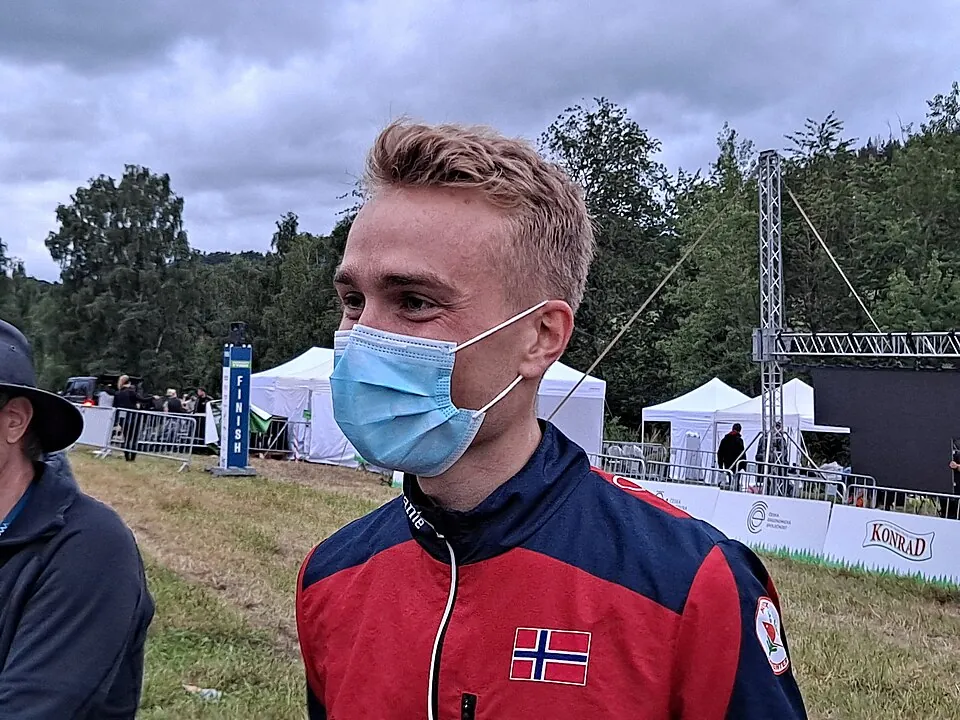

Ориентирование на лыжах: от двух КП до гонки преследования

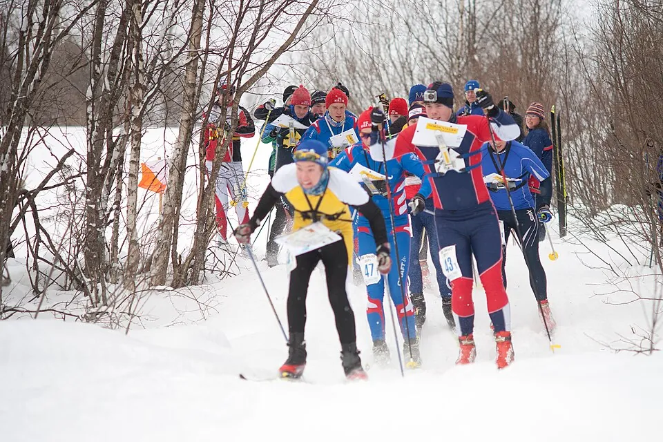
Лыжное ориентирование, как и беговое, IOF ведёт с 1890-х годов, а первый чемпионат мира📍 прошёл в 1975 году в финском Хювинкяа. Мужчины прошли 23,4 км всего с четырьмя КП, на старт вышли 33 мужчины (Википедия), а весь мужской пьедестал заняли финны. Почти полвека чемпионаты делили в основном Финляндия, Швеция, Норвегия и — с 1990-х — Россия, с отдельными победами других стран (так, итальянец Николо Коррадини в 1994 и 1996 годах выигрывал длинную дистанцию): в 1994 году Иван Кузьмин стал первым российским чемпионом мира, в 2000-м Красноярск📍 принял первый чемпионат в России, а в Подмосковье в 2007 году📍 сборная России выиграла все восемь золотых медалей.
География лыжного ориентирования шире европейской: в 2009 году чемпионат впервые уехал в Азию — на японский курорт Русуцу📍, в 2013-м принимал казахстанский Риддер📍, а вид входит в программу Азиатских зимних игр и зимних Всемирных военных игр. В заявке на Олимпиаду 2018 года IOF писала, что на чемпионат 2011 года в Швецию ждут сборные около 35 стран (IOF). В 2011 году в программе появилась смешанная спринт-эстафета, в 2021-м вместо классической длинной дистанции — гонка преследования. Второй красноярский чемпионат 2017 года📍 вошёл в историю громким допинговым случаем: IOF аннулировала результаты Полины Фроловой и перераспределила медали.
После отстранения России на первый план вышли норвежцы, шведы и новые страны: в финском Кеми в 2022 году📍 золото выиграли эстонка (дважды), финн, болгарин, шведка и норвежцы, а в 2024–2026 годах главным героем стал норвежец Йорген Баклид. На чемпионате 2026 года снова в Русуцу📍 швейцарка Элиане Дайнингер стала первой в истории своей страны чемпионкой мира на лыжах. С 1989 года разыгрывается лыжный Кубок мира, с 1994-го — юниорский чемпионат мира (Википедия); один из них, в 2003 году📍, прошёл в Цвелодубово под Петербургом, а в 1999-м в Лемболово состоялся первый ветеранский чемпионат мира на лыжах📍. Все чемпионаты — в статье о чемпионатах мира на лыжах.
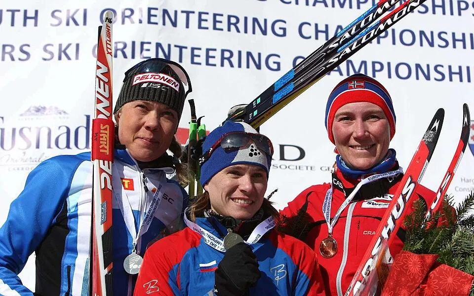
.jpg){kind=link}
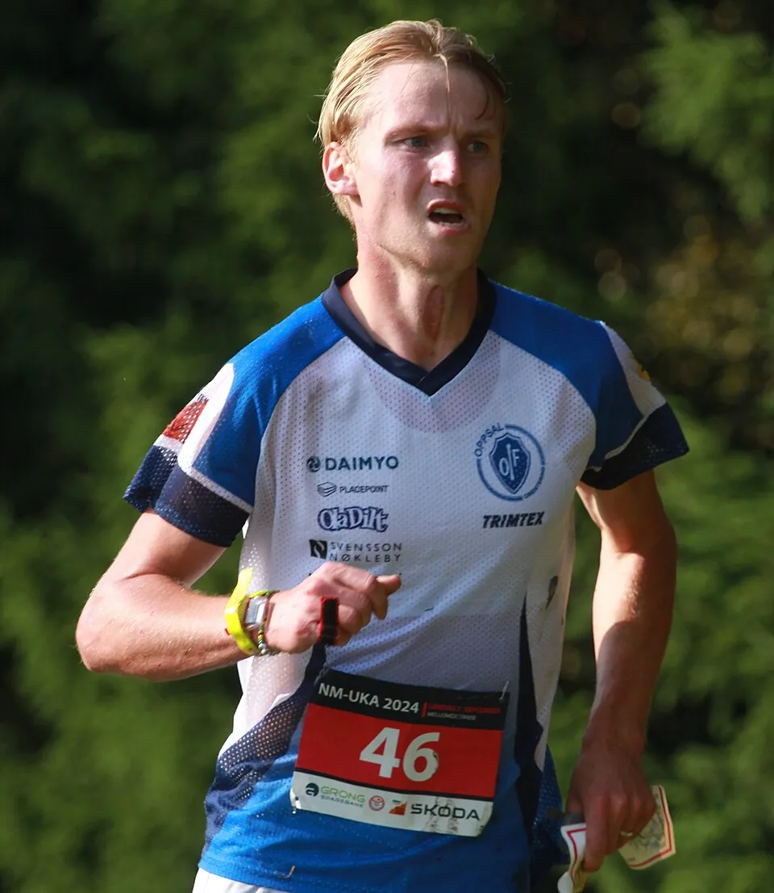

На велосипеде и на тропе: велоориентирование и трейл-ориентирование

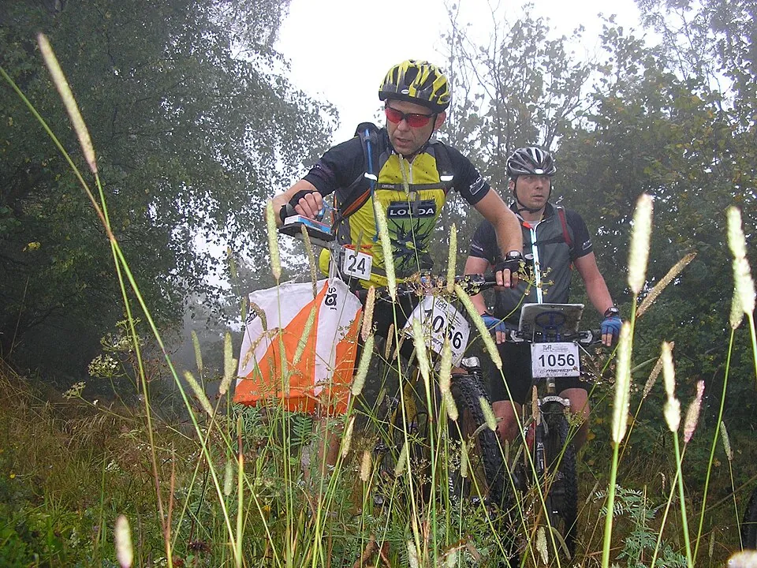
Велоориентирование, по справке IOF, появилось в конце 1980-х на уровне клубов в странах, где был популярен горный велосипед. В 1997 году национальные чемпионаты по нему проводили 12 стран, в 2009-м — 58. Гонщик едет только по дорогам и тропам, сходить с них нельзя, а карта показывает, насколько проезжаема каждая тропа. Первый чемпионат мира📍 прошёл в 2002 году во французском Фонтенбло, на него приехали спортсмены 29 стран (Википедия); с 2004 года чемпионат ежегодный. Он дважды уезжал из Европы — в австралийский Балларат📍 (2004) и в израильский Бен-Шемен📍 (2009), а с 2017 года в Вильнюсе📍 в программе официально появился масс-старт.
Среди звёзд дисциплины — австрийка Михаэла Гигон, швейцарка Кристине Шаффнер (четыре победы на длинной дистанции в 2006–2010 годах), финка Марика Хара и британка Эмили Бенэм, а у мужчин почти десятилетие правили россияне Руслан Грицан и Антон Фолифоров — в 2016 году в Португалии📍 он выиграл все три личные гонки. В 2011 году чемпионат Европы по велоориентированию принимало Рощино📍 под Петербургом. С 2021 года в числе главных сил — Чехия, Финляндия и Дания; подробности — в статье о чемпионатах мира на велосипедах.
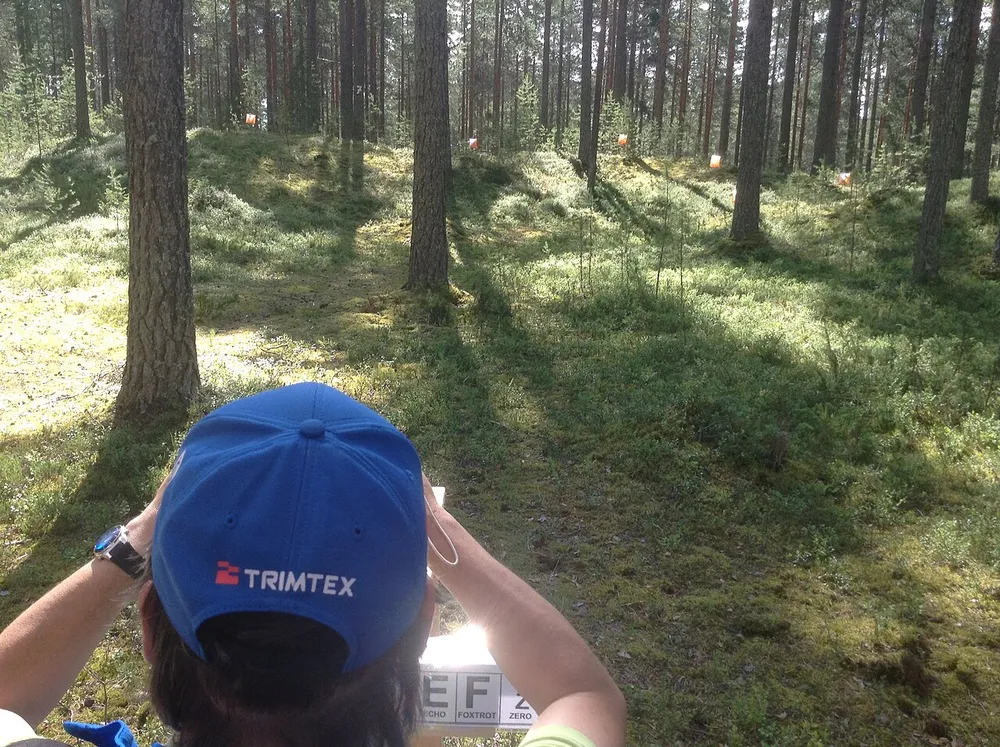

Трейл-ориентирование устроено совсем иначе: никакой гонки от пункта к пункту, участник идёт по тропе и издали определяет, какой из нескольких флагов (или ни один) стоит точно в точке на карте. Скорость передвижения роли не играет, поэтому люди с инвалидностью соревнуются наравне с остальными, а для них есть паралимпийский класс. IOF признала дисциплину в 1992 году, чемпионаты Европы проводятся с 1994-го, Кубок мира впервые прошёл в 1999-м, а с 2004 года его сменил чемпионат мира: первый прошёл в шведском Вестеросе вместе с беговым чемпионатом📍, второй — в 2005-м в японском Аити, единственный пока вне Европы (Википедия). Классический вид называется PreO, с 2013 года к нему добавился TempO из одних контролей на время, с 2016-го — эстафета трёх участников.
Кубок мира, юниоры, ветераны и Всемирные игры
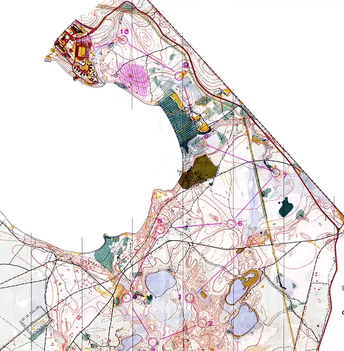
Кроме чемпионатов, лучшие ориентировщики мира с 1980-х годов встречаются в серии стартов Кубка мира. После неофициальных розыгрышей 1983 и 1984 годов первый официальный Кубок 1986 года состоял из восьми стартов в Норвегии, Канаде, США, Франции, Швеции, Чехословакии, Венгрии и Швейцарии; до 2004 года его проводили раз в два года, затем ежегодно (Википедия). Этапы принимали Гонконг и Австралия (1988), Япония (2000, 2005), Новая Зеландия (1994, 2013), Китай (2019) и Россия: 16 мая 1992 года в Яппиля под Петербургом прошёл третий этап Кубка мира📍. «Впервые соревнования такого масштаба можно было посмотреть, не оформляя загранпаспорт», — писал тогда Андрей Лосев в «О-Вестнике» (№ 2 за 1992 год, перепечатка на O-Site). В 2026 году Кубок открылся в швейцарском Локарно📍, а финал прошёл в литовском Друскининкае📍.
Параллельно с 1996 года существует коммерческая серия городских спринтов Park World Tour: к началу 2020 года на ней прошло 117 стартов. По пресс-релизу организаторов 2001 года, первый финал серии прошёл в 1996 году в Чехии, а телерепортажи сезона 2000 показали больше чем в 125 странах. Именно Park World Tour с 1998 года начал возить элиту в Китай — поездки организовывал чехословацкий ориентировщик Ярослав Качмарчик (IOF).
Юниорский чемпионат мира (до 20 лет) вырос из юниорской встречи 1983 года в датском Рю и неофициальных юниорских чемпионатов Европы 1986–1989 годов; официальным он стал в 1990 году в шведском Эльвсбюне, а в 2007-м впервые уехал в Австралию, в Даббо (Википедия). Ветераны старше 35 лет впервые собрались в 1983 году в финском Лахти; IOF признала этот «Кубок мира среди ветеранов» в 1988-м, а в 1998-м он стал чемпионатом мира (WMOC). В 1995 году его принимал Петербург📍 (старты прошли в Лемболово и Орехово), в 2014-м — бразильский Порту-Алегри, в 2026-м — польский Жешув📍 (Википедия). Свои чемпионаты мира есть у студентов (с 1978 года) и у военных: в 1996 году чемпионат мира среди военнослужащих прошёл на Карельском перешейке📍.

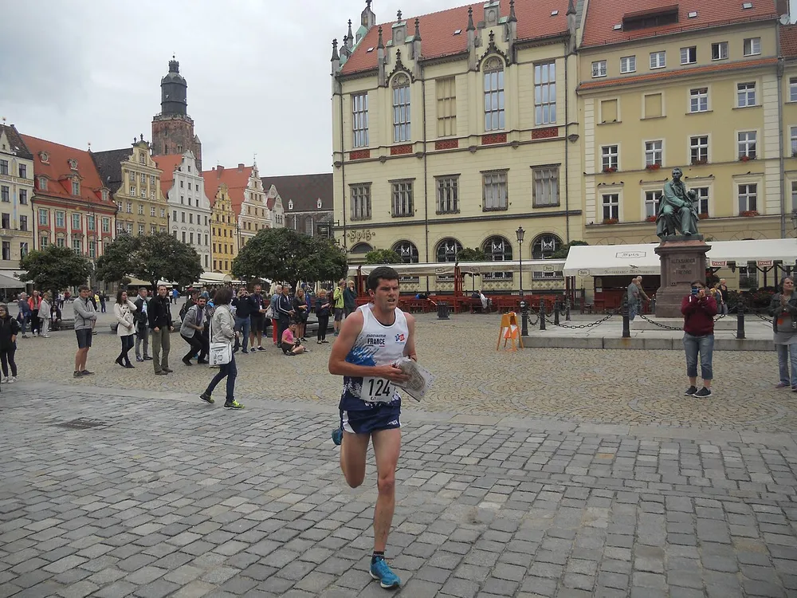
Раз в четыре года ориентировщики выступают на Всемирных играх — соревнованиях по видам спорта, не входящим в олимпийскую программу. IOF вступила в Международную ассоциацию Всемирных игр в 1995 году, ориентирование впервые разыграли в 2001-м в японском Акита, затем в Дуйсбурге, Гаосюне, Кали, Вроцлаве, Бирмингеме (США) и в 2025 году в китайском Чэнду (Википедия). Спринт там выигрывали и россиянин Андрей Храмов (2009), и новозеландец Тим Робертсон (2022), и бельгиец Янник Михилс (2025).
Карта, компас, отметка: как менялось снаряжение
Первые соревнования шли по обычным топографическим картам, и специальная карта для ориентирования появилась не сразу: её пионером Википедия называет картографа Яна Мартина Ларсена. По обзору словенского картографа Д. Петровича, нужда в единых нормах стала очевидна с первыми национальными и международными стартами 1930-х; в 1949 году прошла первая международная конференция по правилам и картам, в 1962-м к чемпионату Европы подготовили первые официальные нормы, в 1965-м в IOF появилась картографическая комиссия, а в 1969 году вышла первая Международная спецификация спортивных карт (ISOM) — двухстраничный список общих условных знаков.

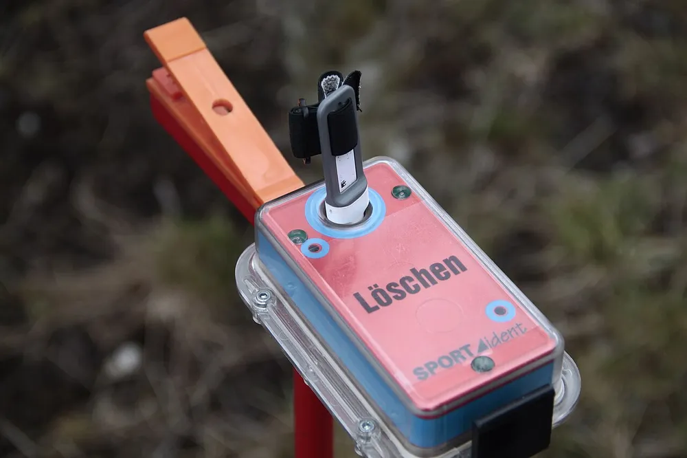
Подробная ISOM появилась в 1975 году, новые редакции — в 1982, 1990, 2000 и 2017 годах (последняя — 44 страницы). Отдельные нормы получили лыжные карты (1984, 1994, 2002, 2014), велосипедные (2002, 2007, 2010) и спринтерские (2007); всего с 1969 по 2017 год вышло 13 официальных изданий, а после 2017-го — ещё 18 ревизий, поэтому в 2024 году комиссия решила перейти к плановым циклическим обновлениям начиная с 2030 года. Карты печатали в пять цветов: коричневый (рельеф), чёрный (скалы, камни и искусственные объекты), синий (вода), жёлтый и зелёный (растительность), — и долго рисовали вручную на кальке, по листу на каждый цвет. В январе 1989 года разработчик Ханс Штайнеггер выпустил первую версию программы OCAD, и компьютерная рисовка постепенно вытеснила ручную; в СССР первую цветную карту сделали в 1965 году в Куйбышеве, а многоцветные карты распространились в 1970-х (подробнее).

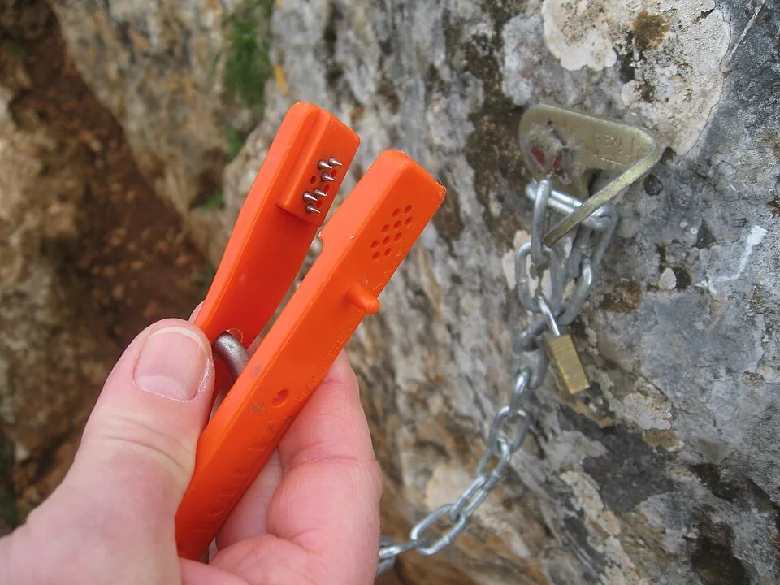
Отметку на КП долгие годы ставили компостерами с иглами в бумажной карточке, и судьям приходилось сверять каждую карточку вручную. Электронные системы пришли в 1990-х. Норвежская компания Emit вместе с норвежской и шведской федерациями создала систему EKT, и, по данным компании, решающий перелом случился в 1995 году, когда её применили на всех крупных международных стартах, включая чемпионат мира в Германии📍. Немецкая (шведская Википедия) система SPORTident, по словам производителя, работает почти 30 лет и используется больше чем в 70 странах; в России в 2000-х появилась и своя SFR-system (подробнее). Электроника дала сплиты и мгновенные результаты, а GPS-трекеры, впервые надетые на бегунов на чемпионате мира 2001 года📍, сделали гонку видимой зрителям. Навигационные приборы на соревнованиях по-прежнему запрещены: GPS-устройство может только записывать путь, а не подсказывать его (Википедия).
За пределами Европы: Америка, Океания, Азия
Первыми неевропейскими членами IOF стали Канада (1968) и Япония (1969). В 2016 году в федерацию входили 80 национальных организаций (56 полноправных и 24 с предварительным членством) из шести регионов, сейчас, по данным IOF, — 80, из них у шести, включая Россию и Белоруссию, права приостановлены (Википедия). Но из 92 чемпионатов мира в беге, на лыжах и велосипедах, собранных в календаре O-Maps, вне Европы прошли лишь восемь.
Северная Америка. Первое соревнование в США, по Википедии, провёл в ноябре 1941 года в Дартмутском колледже финский преподаватель Пилтти Хейсканен. Большую роль сыграл Бьёрн Чельстрём; в 1967 году норвежец Харальд Вибю основал первый клуб в США, а в 1971-м при участии Чельстрёма появилась федерация США. Канадская федерация создана в 1967 году, в 1968-м она вступила в IOF и провела первый чемпионат страны, а в 1972 году Канада впервые прислала на чемпионат мира команду (Википедия). Этапы Кубка мира 1986 года прошли в Канаде и США, а чемпионат мира 1993 года📍 в Уэст-Пойнте остаётся единственным на континенте.
Австралия и Новая Зеландия. Федерация Австралии основана и принята в IOF в 1970 году, на чемпионат мира австралийцы впервые приехали в 1972-м (Википедия), а в 1985-м Бендиго📍 принял первый чемпионат мира вне Европы. Позже Австралия провела чемпионат мира по велоориентированию в Балларате📍, юниорский чемпионат 2007 года и три ветеранских. Её звезда Ханни Олстон выиграла спринт 2006 года, а новозеландец Тим Робертсон, двукратный юниорский чемпион мира в спринте, взял в спринте серебро чемпионата мира 2018 года📍 — первую медаль Новой Зеландии на чемпионатах мира по ориентированию — и бронзу 2021-го📍 (Википедия). В 2029 году юниорский чемпионат мира пройдёт в Крайстчерче.
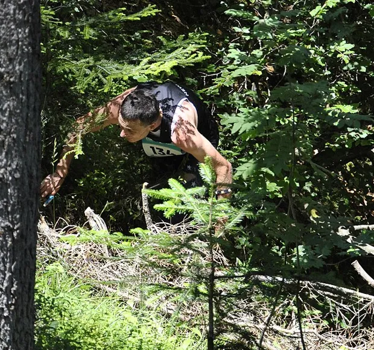

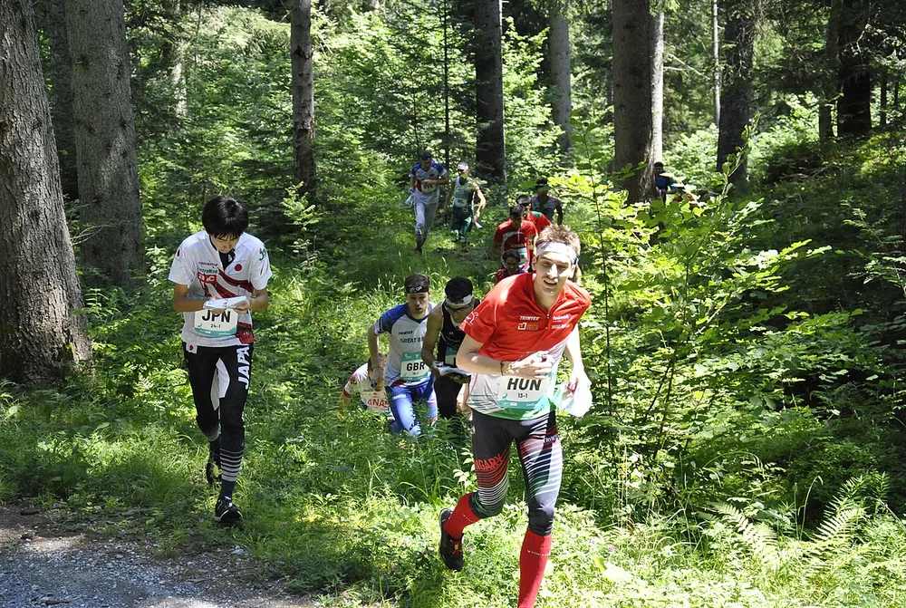

Азия. В Японии первое соревнование, «пешеходное ралли», прошло 22 июня 1966 года на горе Такао в Токио; в июне 1969-го страна вступила в IOF, в 1975-м провела первый всеяпонский чемпионат (японская Википедия). Япония приняла первые Всемирные игры с ориентированием (2001), чемпионат мира 2005 года в Аити📍 вместе с единственным пока вне Европы чемпионатом по трейл-ориентированию и дважды — лыжный чемпионат мира в Русуцу; в 2027 году в регионе Кансай пройдёт ветеранский чемпионат мира. Федерация Китая вступила в IOF летом 1992 года; к 2018 году, по данным IOF, ориентированием там занимались почти 500 тысяч человек в более чем 400 школах, клубах и компаниях, в 2019 году в Китае впервые прошёл этап Кубка мира — сразу финальный, а в 2025-м Чэнду принял Всемирные игры. Лыжный чемпионат мира 2013 года прошёл в казахстанском Риддере, велосипедный 2009-го — в Израиле.
Южная Америка и Африка. Ветеранский чемпионат мира 2014 года прошёл в бразильском Порту-Алегри, Всемирные игры 2013-го — в колумбийском Кали. В Африке единственным членом IOF долго была ЮАР; позже к ней присоединились Кения, Сомали, Мозамбик и другие страны (IOF). На чемпионатах мира в беге медали из-за пределов Европы пока выигрывали только австралийцы и новозеландцы.
СССР и Россия на мировой арене
Советское ориентирование выросло из туризма и военно-прикладных гонок почти без связи с Европой, и на мировую арену вышло поздно: в 1986 году СССР стал полноправным членом IOF, в 1987-м сборная впервые выступила на чемпионате мира, а в 1989-м Алида Абола выиграла первую медаль. Последнюю медаль советской сборной — бронзу в Марианске-Лазне в 1991 году📍 — завоевал эстонец Сикстен Сильд (чемпионаты мира). Подробно об этом пути рассказывает статья об ориентировании в России и СССР.
Сборная России быстро стала одной из сильнейших. На лыжах Иван Кузьмин выиграл в 1994 году первое российское золото, а Татьяна Власова и Эдуард Хренников собрали на двоих 15 личных титулов чемпионов мира. В беге Андрей Храмов стал в 2005 году первым российским чемпионом мира, а эстафета с Валентином Новиковым побеждала в 2006, 2007, 2010 и 2013 годах; в медальном зачёте чемпионатов мира в беге у России 11 золотых, 12 серебряных и 15 бронзовых медалей. На велосипедах Руслан Грицан и Антон Фолифоров почти десятилетие делили мужские титулы. Россия принимала чемпионаты мира на лыжах (2000📍, 2007📍 и 2017📍), этап Кубка мира 1992 года, ветеранский Кубок мира 1995-го и юниорские лыжные чемпионаты мира 1998, 2003 и 2006 годов (Википедия). С 2022 года российские спортсмены на старты IOF не допускаются. Все медали — в статьях о чемпионатах мира в беге, на лыжах и на велосипедах.
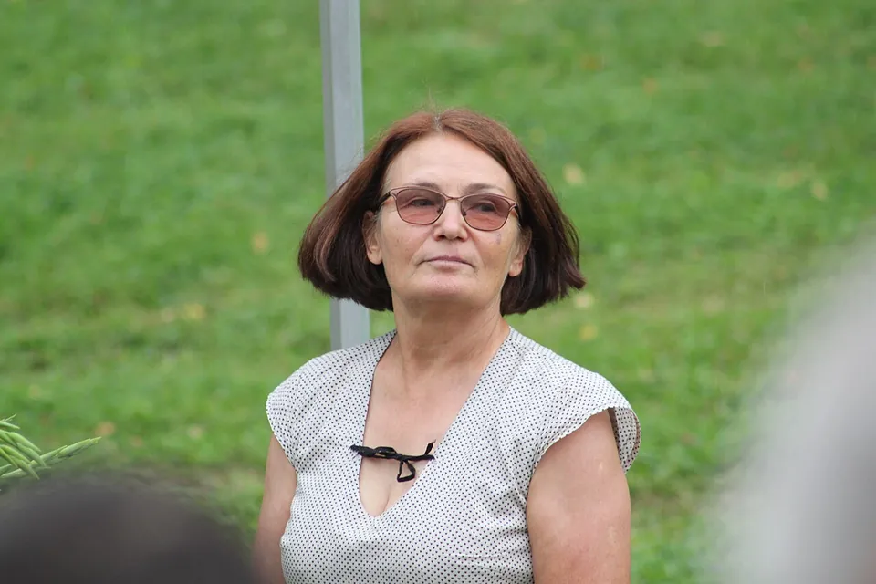

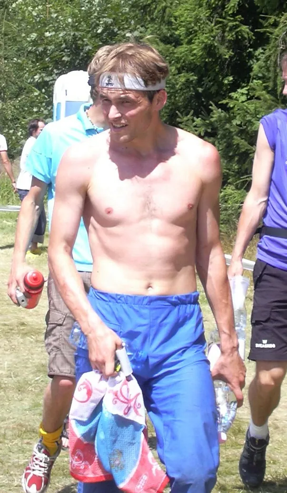

Вместо заключения
Почти за 130 лет ориентирование прошло путь от офицерского упражнения в норвежском лесу до спорта с четырьмя дисциплинами, 80 национальными федерациями и ежегодными чемпионатами мира, которые показывают по телевидению и транслируют по GPS. Дистанции стали короче и ближе к зрителю — от 19,5 км с тремя КП в 1897 году до раундов нокаут-спринта по 5–8 минут на улицах городов; бумажная карточка с компостерами уступила место электронному чипу, а ручная рисовка — компьютерным программам. Неизменной осталась суть: карта, местность и решение, которое спортсмен принимает сам.
Олимпийской программы ориентирование так и не добилось: заявку 2010 года отклонил МОК, а в 2015-м ориентирование не попало в короткий список оргкомитета Игр в Токио, и главной мультиспортивной сценой остаются Всемирные игры. Лидеры по-прежнему — Швеция, Норвегия, Швейцария и Финляндия, но в 2020-х титулы и медали чемпионатов мира и Всемирных игр выигрывали и спортсмены Франции, Дании, Чехии, Великобритании, Новой Зеландии, Бельгии, Эстонии и Болгарии, а чемпионаты регулярно уезжают в Азию. Членство России и Белоруссии в IOF остаётся приостановленным. Впереди — лесной чемпионат мира 2027 года в венгерском Веспреме и спринтерский 2028-го в испанской Жироне, назначенный на 26–30 апреля (официальный сайт чемпионата). Все чемпионаты мира IOF с протоколами, картами, GPS-трансляциями и видео собраны в календаре O-Maps и продолжают пополняться.
Статья составлена в октябре 2026 года; актуализирована 14 ноября 2026 года. Это компиляция материалов O-Maps и других источников, перечисленных в конце страницы, при её подготовке использовался ИИ. Если вы заметили неточность или можете дополнить рассказ, напишите нам.
Источники
Международная федерация ориентирования: сайт IOF, национальные федерации, историческая справка, «IOF 50 years» и о первом конгрессе 1961 года, страницы дисциплин (лыжи, велосипед, трейл-ориентирование), новости об олимпийских заявках (2010, решение МОК, 2015, итог), о GPS-трансляциях, о Китае и Я. Качмарчике, о нейтральном статусе (2021) и отстранении России и Белоруссии (28.02.2022, 4.03.2022, март 2026); Википедия: History of orienteering, Orienteering, International Orienteering Federation, World Orienteering Championships и списки призёров (мужчины, женщины, смешанные), European Orienteering Championships, O-Ringen, JWSOC, WOC 1966, WSOC, WMTBOC, WTOC, Trail orienteering, Orienteering World Cup, JWOC, WMOC, Orienteering at the World Games, Orienteering map, Orienteering Australia, Orienteering Canada, Orientering (sv), Ernst Killander (sv), Orientering (no), 日本オリエンテーリング協会 (ja); D. Petrovič, «Past and future of International Specification for Orienteering Maps» (Abstracts of the ICA, 2025); история OCAD; история Emit; SPORTident; Park World Tour и пресс-релиз PWT 2001; В. В. Добрецов, «Узелки» об этапе Кубка мира 1992 года (O-Site); даты, места, результаты и карты — календарь и архив карт O-Maps (числа о картах и событиях O-Maps в тексте и на диаграммах — по состоянию на 14 ноября 2026 года, архив и календарь продолжают пополняться); статьи O-Maps о чемпионатах мира, мира на лыжах, мира на велосипедах и Европы, об ориентировании в Европе и в России и СССР. Фотографии — Wikimedia Commons (авторы и лицензии указаны в подписях).Указатель имён
Люди, упомянутые в статье. Имя ведёт на основную страницу о человеке (отчество, если известно, — во всплывающей подсказке), за ним — другие источники, цифры в конце — места упоминаний в тексте.
- Абола Алида · Wikipedia 1 2 3
- Александерссон Туве · Wikipedia 1 2 3
- Баклид Йорген 1 2
- Власова (Наумова) Татьяна · Wikipedia 1 2
- Гемперле (Виноградова) Наталья 1
- Гигон Михаэла 1
- Грицан Руслан · Wikipedia 1 2
- Жоржу Тьерри · Википедия 1 2 3
- Олстон Ханни (Джоанна) 1 2
- Кауппи Минна · Wikipedia 1 2
- Качмарчик Ярослав · IOF, 2019 1
- Кекконен Урхо 1
- Кибурц Маттиас 1
- Килландер Эрнст · Wikipedia 1 2
- Козак Петр 1
- Крингстад Анникен · Wikipedia 1
- Кузьмин Иван 1 2
- Лёвдин Инга 1
- Линдквист Улла 1
- Лунданес Улав 1
- Михилс Янник 1
- Монспарт Шаролта 1 2 3
- Нигли-Лудер (Лудер) Симоне 1 2 3 4
- Новиков Валентин 1
- Робертсон Тим 1 2 3
- Тобе Эрик 1
- Тон Эйвин 1
- Фолифоров Антон 1 2
- Фоссер Каспер Харлем 1 2
- Хадлер Оге · Wikipedia 1 2
- Храмов Андрей 1 2 3 4
- Хренников Эдуард 1
- Хубманн Даниэль 1 2 3
- Чельстрём Бьёрн 1 2 3
- Шаффнер Кристине 1
Посмотреть архив: все старты IOF в календаре · чемпионаты мира в беге · на лыжах · на велосипедах · все карты O-Maps.